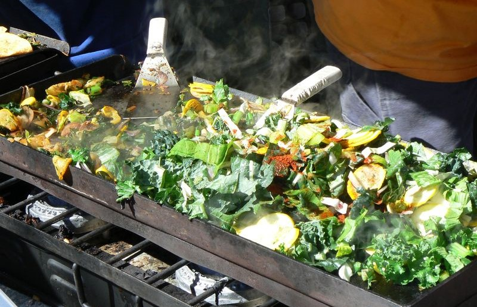
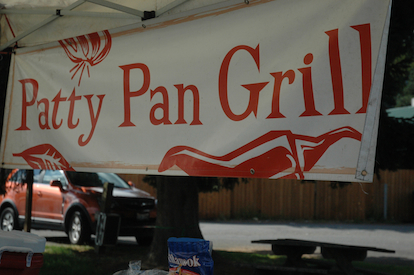

Patty Pan is a worker-owned food enterprise based in Shoreline, Washington. Twenty-five years ago, we started selling ready-to-eat food at Seattle-area farmers markets. It was a good way to make a living: feeding our community and being fed by our neighbors. We built relationships, found our place in the local food economy, and developed a core group of recipes and products showcasing the amazing artisans and farmers who vend with us at the markets every week.
Patty Pan has been worker-owned since 2013, when a core group of employees stepped up to take an active role in management and decision-making. A worker coop is a mini democracy, where members have a real stake in crafting an organization that meets their needs and expresses their vision.
As a collectively run business, we branched into provisioning Western Washington retailers, especially forward-thinking groceries that share our values around eating well, living well, and celebrating the agricultural bounty of the great Northwest. If our products aren't yet at your favorite grocery, let us and them know you'd like them to be!

Subtitled A History of Eating Well, this book tells the story of our relationship with food. Starting with our earliest ancestors, who improved their diets using tools and fire, it traces the long history of ways we have changed our food, and ways our food has changed us. It provides a long-range perspective on the question of why we tend to have so much trouble making sensible food choices even when we have a basic understanding of what it means to eat well.
You can get a copy of Cavemen, Monks and Slow Food at the market booth and on Amazon as a paperback and on Kindle.

You don't have to be vegan to eat vegan food, just like you don't have to be Thai to eat Thai food. There are many good reasons to eat fewer meat and dairy products, from health to carbon footprint, and this cookbook takes a laid back approach to helping you learn a range of easy, satisfying meat-and-dairy-free recipes.
Buy The Accidental Vegan today!

Organized by season, Local Bounty offers a year-round cornucopia of ideas for bringing out the best in fresh, local ingredients. Inspired by Seattle's markets and Western Washington farmers, this buffet of straightforward recipes will inspire you to try new fruits and veggies, and re-experience familiar ones.
Buy Local Bounty today!